load("brain_analysis_data_2024mar18.RData")Load the data
load appropriate libraries
library(tidyverse)── Attaching packages ─────────────────────────────────────── tidyverse 1.3.2 ──
✔ ggplot2 3.4.2 ✔ purrr 1.0.1
✔ tibble 3.2.1 ✔ dplyr 1.1.2
✔ tidyr 1.3.0 ✔ stringr 1.5.0
✔ readr 2.1.3 ✔ forcats 0.5.2
── Conflicts ────────────────────────────────────────── tidyverse_conflicts() ──
✖ dplyr::filter() masks stats::filter()
✖ dplyr::lag() masks stats::lag()library(ggplot2)
library(mgcv)Loading required package: nlme
Attaching package: 'nlme'
The following object is masked from 'package:dplyr':
collapse
This is mgcv 1.8-41. For overview type 'help("mgcv-package")'.library(MRIcrotome)
Attaching package: 'MRIcrotome'
The following object is masked from 'package:graphics':
legendlibrary(data.tree)
library(broom)
library(emmeans)
library(RMINC)
library(splines)
library(gratia)
Attaching package: 'gratia'
The following object is masked from 'package:MRIcrotome':
drawBuild the hierarchical tree
hvols <- suppressWarnings(addVolumesToHierarchy(hdefs, structvols))Create the list of structures in the hierarchical tree
brainstructs <- Traverse(hvols)
# make it easier to find structures by name
names(brainstructs) <- map_chr(brainstructs, ~.x$name)We’re going to be using general additive models. First a quick look at how they produce different curves from the third order splines used before.
gf %>% mutate(bv=brainstructs[["root2"]]$volumes) %>%
ggplot() + aes(x=age, y=bv) +
geom_point(alpha=0.2) +
geom_smooth(method="lm", formula=y~ns(x, 3)) +
geom_smooth(method="gam", formula=y~s(x, bs="cs", k=5), colour=I("red"))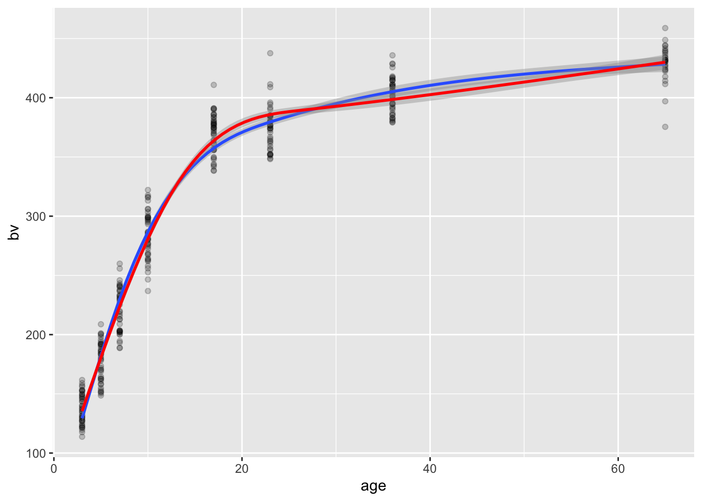
Subtle differences, but definitely there.
Define the models we are going to use. First, the simple model assuming the same slope but different offsets per group.
m1 <- function(y) {
gf %>% mutate(y=y$volumes) %>%
gam(y ~ sex + Treatment + s(age, bs="cs", k=5), data=.)
}Let’s see what the output looks like
s1 <- m1(brainstructs[["root2"]])
summary(s1)
Family: gaussian
Link function: identity
Formula:
y ~ sex + Treatment + s(age, bs = "cs", k = 5)
Parametric coefficients:
Estimate Std. Error t value Pr(>|t|)
(Intercept) 295.925 1.715 172.530 <2e-16 ***
sexF -4.831 1.966 -2.458 0.0145 *
TreatmentMAR 2.642 2.011 1.314 0.1898
---
Signif. codes: 0 '***' 0.001 '**' 0.01 '*' 0.05 '.' 0.1 ' ' 1
Approximate significance of smooth terms:
edf Ref.df F p-value
s(age) 3.891 4 2766 <2e-16 ***
---
Signif. codes: 0 '***' 0.001 '**' 0.01 '*' 0.05 '.' 0.1 ' ' 1
R-sq.(adj) = 0.971 Deviance explained = 97.2%
GCV = 313.75 Scale est. = 307.14 n = 327The parametric coefficients are as before. The new bits are in the smooth terms; here saying that the estimated smooths correspond to a spine fit on age with 3.9 degrees of freedom.
This model isn’t quite correct though, as it does not take the mixed effects nature of the data into account. Let’s fix that.
# we'll have to first coerce subject_id into a factor
gf <- gf %>% mutate(subject_id=factor(subject_id))
m1 <- function(y) {
gf %>% mutate(y=y$volumes) %>%
gam(y ~ sex + Treatment + s(age, bs="cs", k=8) +
s(subject_id, bs="re"),
method="REML",
data=.)
}s2 <- m1(brainstructs[["root2"]])
summary(s2)
Family: gaussian
Link function: identity
Formula:
y ~ sex + Treatment + s(age, bs = "cs", k = 8) + s(subject_id,
bs = "re")
Parametric coefficients:
Estimate Std. Error t value Pr(>|t|)
(Intercept) 296.0261 3.6744 80.565 <2e-16 ***
sexF -4.0189 4.2403 -0.948 0.344
TreatmentMAR 0.4738 4.3095 0.110 0.913
---
Signif. codes: 0 '***' 0.001 '**' 0.01 '*' 0.05 '.' 0.1 ' ' 1
Approximate significance of smooth terms:
edf Ref.df F p-value
s(age) 6.516 7 10345.87 <2e-16 ***
s(subject_id) 45.196 49 16.14 <2e-16 ***
---
Signif. codes: 0 '***' 0.001 '**' 0.01 '*' 0.05 '.' 0.1 ' ' 1
R-sq.(adj) = 0.992 Deviance explained = 99.4%
-REML = 1267.2 Scale est. = 80.952 n = 327Let’s look at one of the sex dimorphic nuclei
s3 <- m1(brainstructs[["Bed nuclei of the stria terminalis"]])
summary(s3)
Family: gaussian
Link function: identity
Formula:
y ~ sex + Treatment + s(age, bs = "cs", k = 8) + s(subject_id,
bs = "re")
Parametric coefficients:
Estimate Std. Error t value Pr(>|t|)
(Intercept) 1.012788 0.013384 75.672 <2e-16 ***
sexF -0.033520 0.015425 -2.173 0.0306 *
TreatmentMAR -0.001378 0.015690 -0.088 0.9301
---
Signif. codes: 0 '***' 0.001 '**' 0.01 '*' 0.05 '.' 0.1 ' ' 1
Approximate significance of smooth terms:
edf Ref.df F p-value
s(age) 6.507 7 818.341 <2e-16 ***
s(subject_id) 38.504 49 4.568 <2e-16 ***
---
Signif. codes: 0 '***' 0.001 '**' 0.01 '*' 0.05 '.' 0.1 ' ' 1
R-sq.(adj) = 0.943 Deviance explained = 95.1%
-REML = -399.42 Scale est. = 0.0032559 n = 327Let’s plot it out. This is now a harder model to plot since it doesn’t easily get specified into ggplot syntax. So we’re better off creating our own data frame for the model predictions.
m1g <- function(g1) {
emmeans(g1, ~ sex|age, at=list(age=seq(3,65,1))) %>% tidy(conf.int=T)
}And make a function for plotting a brain structure, as we’ll need that again
plotROI <- function(df, fittedModel, brainstructs, roiName, title=NULL, subtitle=NULL) {
df %>%
mutate(y=brainstructs[[roiName]]$volumes) %>%
ggplot() +
aes(x=age, y=y, colour=sex, fill=sex) +
geom_point(alpha=0.5) +
geom_ribbon(data=fittedModel,
aes(y=estimate, ymin=conf.low, ymax=conf.high),
colour=NA, alpha=0.5) +
geom_line(data=fittedModel, aes(y=estimate)) +
ylab(bquote(Volume ~ (mm^3))) +
ggtitle(ifelse(is.null(title), roiName, title),
subtitle = subtitle) +
scale_color_brewer(palette = "Set1") +
scale_fill_brewer(palette = "Set1") +
theme_minimal()
}s3Predict <- m1g(s3)
plotROI(gf, s3Predict, brainstructs,
"Bed nuclei of the stria terminalis",
subtitle = "Same slope, different offsets")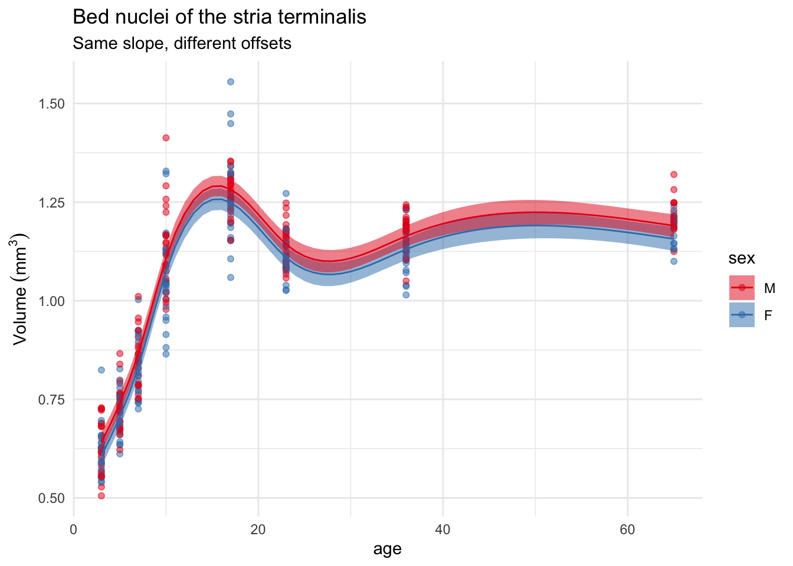
Now let’s expand that model to allow for different slopes.
m2 <- function(y) {
gf %>% mutate(y=y$volumes) %>%
gam(y ~ Treatment +
s(age, bs="cs", k=8) +
s(sex, age, bs="sz", k=8) +
s(subject_id, bs="re"),
method="REML",
data=.)
}And try the BNST fit
s4 <- m2(brainstructs[["Bed nuclei of the stria terminalis"]])
summary(s4)
Family: gaussian
Link function: identity
Formula:
y ~ Treatment + s(age, bs = "cs", k = 8) + s(sex, age, bs = "sz",
k = 8) + s(subject_id, bs = "re")
Parametric coefficients:
Estimate Std. Error t value Pr(>|t|)
(Intercept) 0.996274 0.012115 82.236 <2e-16 ***
TreatmentMAR -0.001653 0.015677 -0.105 0.916
---
Signif. codes: 0 '***' 0.001 '**' 0.01 '*' 0.05 '.' 0.1 ' ' 1
Approximate significance of smooth terms:
edf Ref.df F p-value
s(age) 6.507 7.000 816.869 <2e-16 ***
s(sex,age) 2.001 2.001 2.911 0.0561 .
s(subject_id) 38.469 49.000 4.561 <2e-16 ***
---
Signif. codes: 0 '***' 0.001 '**' 0.01 '*' 0.05 '.' 0.1 ' ' 1
R-sq.(adj) = 0.943 Deviance explained = 95.1%
-REML = -394.47 Scale est. = 0.0032558 n = 327This model becomes harder to interpret, as there is no such thing as a main effect of sex anymore. It does hint at the need of separate slopes for sex and age though. Let’s plot it out.
s4Predict <- m1g(s4)
plotROI(gf, s4Predict, brainstructs,
"Bed nuclei of the stria terminalis",
subtitle = "Different slope, different offsets")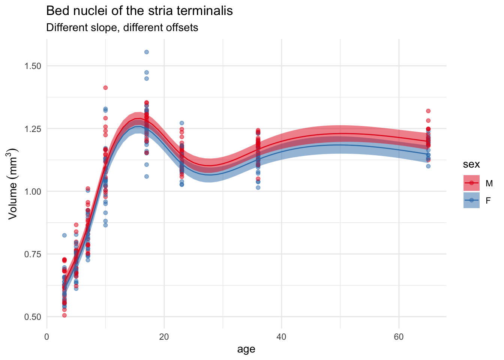
This plot looks quite similar to what we had before. Any evidence that the more complicated model fits better?
anova(s3, s4, test="Chisq")Analysis of Deviance Table
Model 1: y ~ sex + Treatment + s(age, bs = "cs", k = 8) + s(subject_id,
bs = "re")
Model 2: y ~ Treatment + s(age, bs = "cs", k = 8) + s(sex, age, bs = "sz",
k = 8) + s(subject_id, bs = "re")
Resid. Df Resid. Dev Df Deviance Pr(>Chi)
1 270.57 0.90835
2 269.58 0.90519 0.99287 0.0031602 0.3222Nope. So, BNST conclusion would be evidence (though subtle) for there being different offsets for sex, but no evidence for different offsets and slopes.
Let’s expand the model once more to covary for brain volume
# first we add brain volume to the data frame
gf <- gf %>% mutate(brainVolume = brainstructs[["root2"]]$volumes)
m3 <- function(y) {
gf %>% mutate(y=y$volumes) %>%
gam(y ~ Treatment + brainVolume +
s(age, bs="cs", k=8) +
s(sex, age, bs="sz", k=8) +
s(subject_id, bs="re"),
method="REML",
data=.)
}s5 <- m3(brainstructs[["Bed nuclei of the stria terminalis"]])
summary(s5)
Family: gaussian
Link function: identity
Formula:
y ~ Treatment + brainVolume + s(age, bs = "cs", k = 8) + s(sex,
age, bs = "sz", k = 8) + s(subject_id, bs = "re")
Parametric coefficients:
Estimate Std. Error t value Pr(>|t|)
(Intercept) 0.0378633 0.0537841 0.704 0.482
TreatmentMAR -0.0063100 0.0065784 -0.959 0.338
brainVolume 0.0032653 0.0001825 17.893 <2e-16 ***
---
Signif. codes: 0 '***' 0.001 '**' 0.01 '*' 0.05 '.' 0.1 ' ' 1
Approximate significance of smooth terms:
edf Ref.df F p-value
s(age) 6.206 7.000 110.979 < 2e-16 ***
s(sex,age) 2.000 2.001 7.376 0.000745 ***
s(subject_id) 10.493 49.000 0.284 0.089529 .
---
Signif. codes: 0 '***' 0.001 '**' 0.01 '*' 0.05 '.' 0.1 ' ' 1
R-sq.(adj) = 0.956 Deviance explained = 95.9%
-REML = -467.91 Scale est. = 0.0024782 n = 327s5Predict <- m1g(s5)
plotROI(gf, s5Predict, brainstructs,
"Bed nuclei of the stria terminalis",
subtitle = "Different slope, different offsets, + brain volume")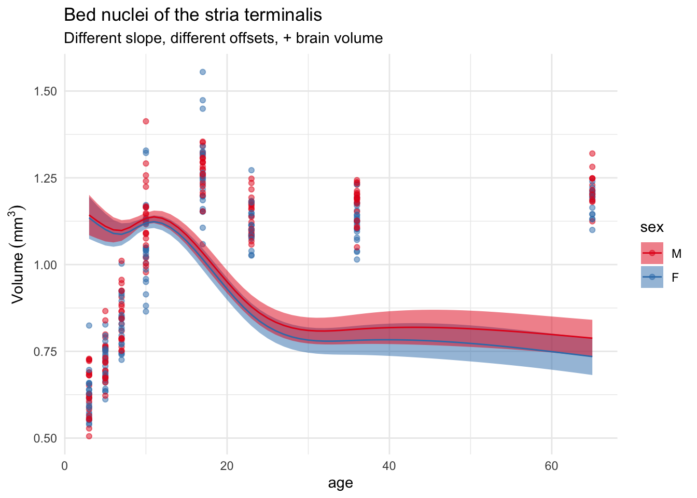
Oops - of course the slopes are on a different scale when covarying for brain volume. Let’s fix that in a revised version of the plotting function
plotROI2 <- function(df, gamModel, fittedModel, brainstructs, roiName, title=NULL, subtitle=NULL) {
df %>%
mutate(y=predict(gamModel,
newdata = df %>% mutate(brainVolume=mean(brainVolume))) +
residuals(gamModel)) %>%
ggplot() +
aes(x=age, y=y, colour=sex, fill=sex) +
geom_point(alpha=0.5) +
geom_ribbon(data=fittedModel,
aes(y=estimate, ymin=conf.low, ymax=conf.high),
colour=NA, alpha=0.5) +
geom_line(data=fittedModel, aes(y=estimate)) +
ylab(bquote(Volume ~ (mm^3))) +
labs(title=ifelse(is.null(title), roiName, title),
subtitle = subtitle,
caption = paste("Evaluated at brain volume =",
round(mean(df$brainVolume)))) +
scale_color_brewer(palette = "Set1") +
scale_fill_brewer(palette = "Set1") +
theme_minimal()
} plotROI2(gf, s5, s5Predict, brainstructsBV,
"Bed nuclei of the stria terminalis",
subtitle = "Different slope, different offsets, + brain volume")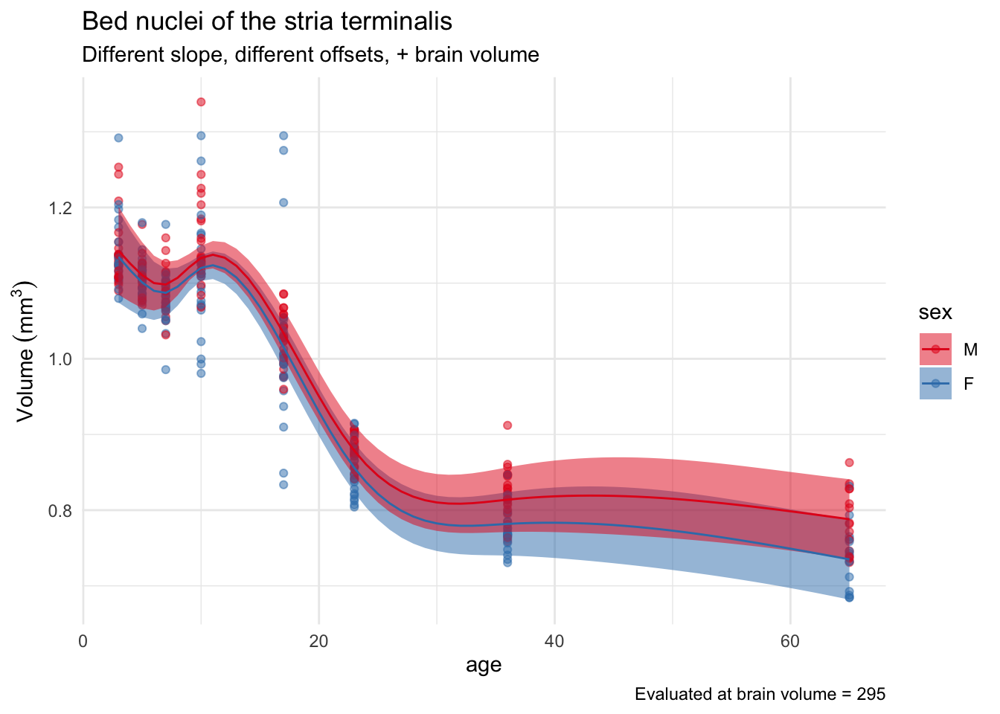
Let’s go back to the models without controlling for brain volume for a moment. How do we interpret the effects?
summary(s3)
Family: gaussian
Link function: identity
Formula:
y ~ sex + Treatment + s(age, bs = "cs", k = 8) + s(subject_id,
bs = "re")
Parametric coefficients:
Estimate Std. Error t value Pr(>|t|)
(Intercept) 1.012788 0.013384 75.672 <2e-16 ***
sexF -0.033520 0.015425 -2.173 0.0306 *
TreatmentMAR -0.001378 0.015690 -0.088 0.9301
---
Signif. codes: 0 '***' 0.001 '**' 0.01 '*' 0.05 '.' 0.1 ' ' 1
Approximate significance of smooth terms:
edf Ref.df F p-value
s(age) 6.507 7 818.341 <2e-16 ***
s(subject_id) 38.504 49 4.568 <2e-16 ***
---
Signif. codes: 0 '***' 0.001 '**' 0.01 '*' 0.05 '.' 0.1 ' ' 1
R-sq.(adj) = 0.943 Deviance explained = 95.1%
-REML = -399.42 Scale est. = 0.0032559 n = 327This model (s3) has a spline for age and main effects for treatment and sex. Reference sex is male (we usually switch that, but that’s just convention), so the value is telling us that female mice have a smaller BNST. This is vaguely significant. This model is quite similar to either straight line models or the third order spline models we fitted earlier.
summary(s4)
Family: gaussian
Link function: identity
Formula:
y ~ Treatment + s(age, bs = "cs", k = 8) + s(sex, age, bs = "sz",
k = 8) + s(subject_id, bs = "re")
Parametric coefficients:
Estimate Std. Error t value Pr(>|t|)
(Intercept) 0.996274 0.012115 82.236 <2e-16 ***
TreatmentMAR -0.001653 0.015677 -0.105 0.916
---
Signif. codes: 0 '***' 0.001 '**' 0.01 '*' 0.05 '.' 0.1 ' ' 1
Approximate significance of smooth terms:
edf Ref.df F p-value
s(age) 6.507 7.000 816.869 <2e-16 ***
s(sex,age) 2.001 2.001 2.911 0.0561 .
s(subject_id) 38.469 49.000 4.561 <2e-16 ***
---
Signif. codes: 0 '***' 0.001 '**' 0.01 '*' 0.05 '.' 0.1 ' ' 1
R-sq.(adj) = 0.943 Deviance explained = 95.1%
-REML = -394.47 Scale est. = 0.0032558 n = 327Now we’ve removed the main effect term for sex and instead added a spline term for sex and age. There’s a lot of info about different spline choices out there, but the two we use here are s(age, bs="cs", k=8), which tells the GAM to allow a cubic spline (that’s the cs) on age with a maximum of 8 degrees of freedom. If you look at the output, it tells us that it found a effective degrees of freedom (edf) of 6.5 optimal. The second spline term is s(sex,age, bs="sz", k=8). This is a sum to zero (sz) constraint that fits a separate smooth on age for each level of sex. Now, since we already fit a smoothing term for age, this here can be interpreted as deviations from the main fit line. The fact that we have 2 effective degrees of freedom that are hovering at p=0.05 tells us that there is some evidence deviations from the main age curve by sex. The last smooth term on subject id is the equivalent of adding a random effect to lmer.
It can help to investigate the model:
plot(s4)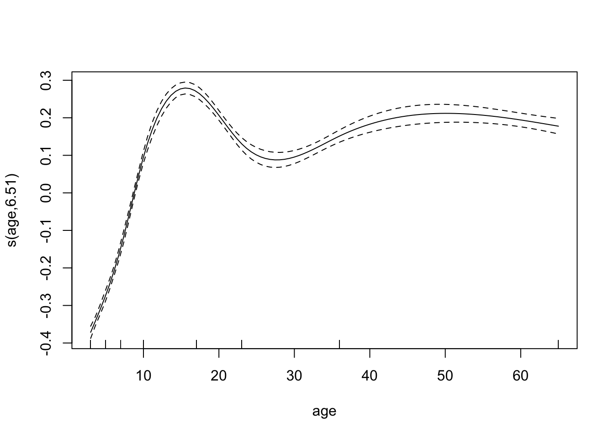
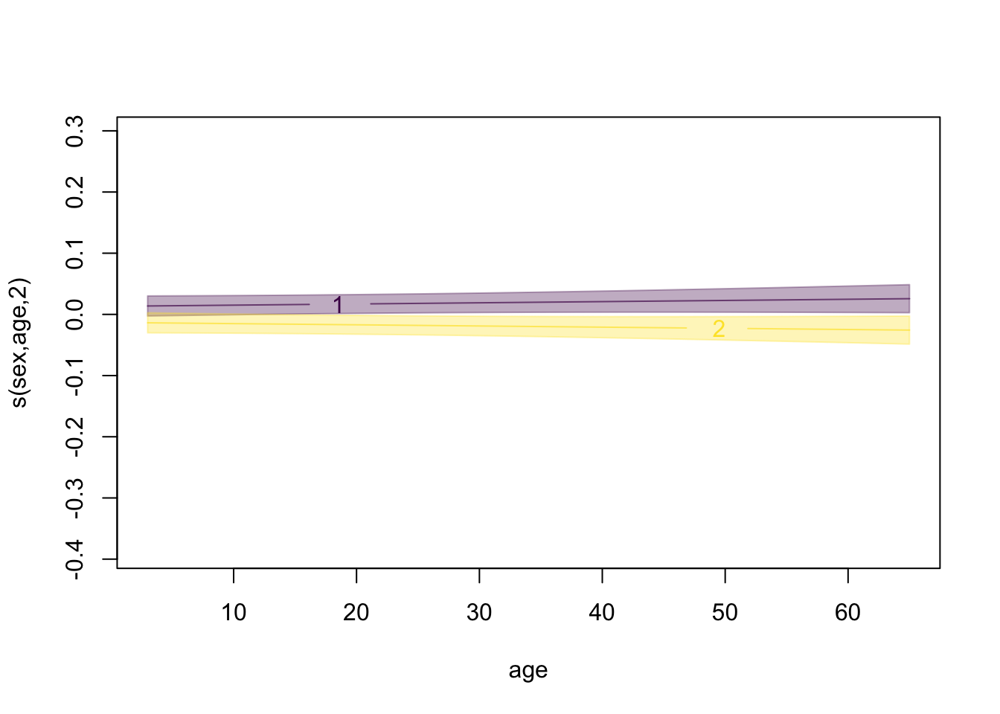
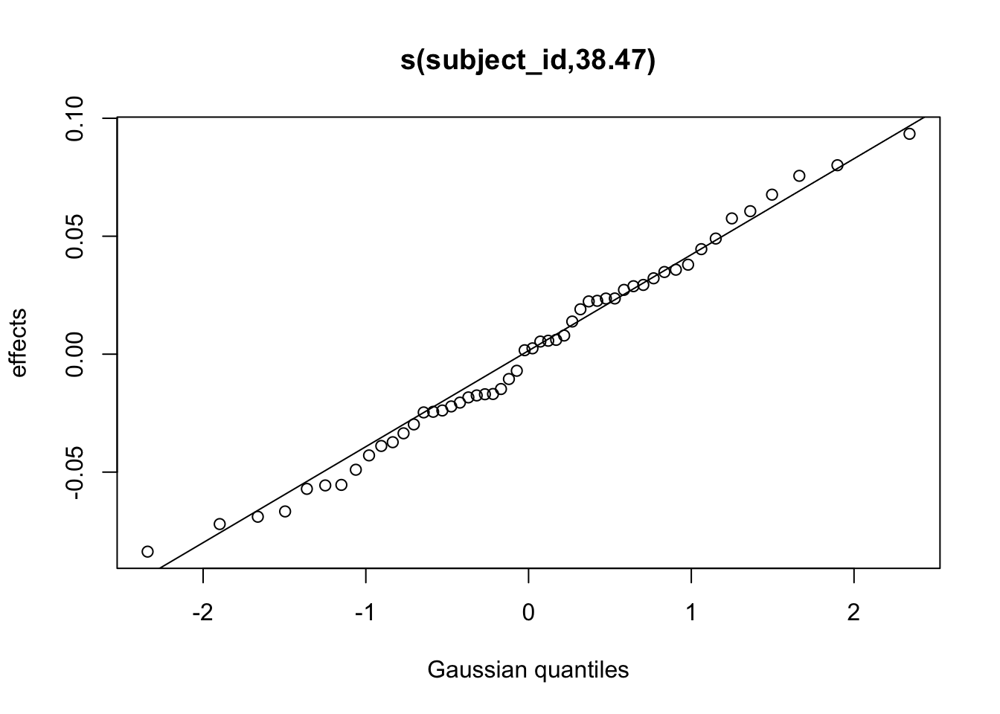
again showing the roughly equal deviation from the main age curve. The earlier anova comparing the two models also showed that it’s of no great benefit to add the more complicated smoothing term.
For completeness sake, what about treatment?
m4 <- function(y) {
gf %>% mutate(y=y$volumes) %>%
gam(y ~ s(age, bs="cs", k=8) +
s(sex, age, bs="sz", k=8) +
s(Treatment, age, bs="sz", k=8) +
s(sex,Treatment, age, bs="sz", k=8) +
s(subject_id, bs="re"),
method="REML",
data=.)
}This model now fits separate sum to zero splines for sex, treatment, and the three way treatment by sex by age terms.
s6 <- m4(brainstructs[["Bed nuclei of the stria terminalis"]])
summary(s6)
Family: gaussian
Link function: identity
Formula:
y ~ s(age, bs = "cs", k = 8) + s(sex, age, bs = "sz", k = 8) +
s(Treatment, age, bs = "sz", k = 8) + s(sex, Treatment, age,
bs = "sz", k = 8) + s(subject_id, bs = "re")
Parametric coefficients:
Estimate Std. Error t value Pr(>|t|)
(Intercept) 0.996820 0.007828 127.3 <2e-16 ***
---
Signif. codes: 0 '***' 0.001 '**' 0.01 '*' 0.05 '.' 0.1 ' ' 1
Approximate significance of smooth terms:
edf Ref.df F p-value
s(age) 6.513 7.000 801.958 <2e-16 ***
s(sex,age) 2.000 2.000 1.778 0.171
s(Treatment,age) 3.240 3.676 1.102 0.244
s(sex,Treatment,age) 2.000 2.000 1.562 0.212
s(subject_id) 37.609 48.000 4.518 <2e-16 ***
---
Signif. codes: 0 '***' 0.001 '**' 0.01 '*' 0.05 '.' 0.1 ' ' 1
R-sq.(adj) = 0.944 Deviance explained = 95.3%
-REML = -383.41 Scale est. = 0.003201 n = 327plot(s6)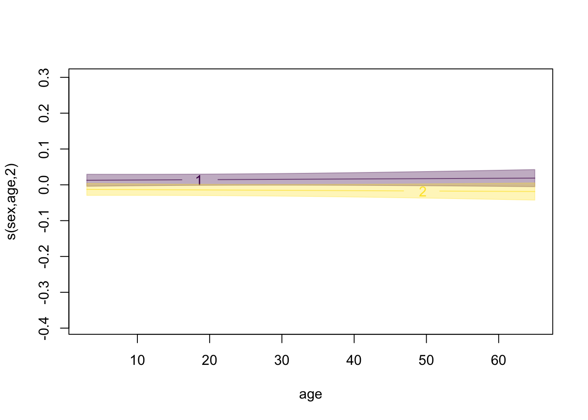
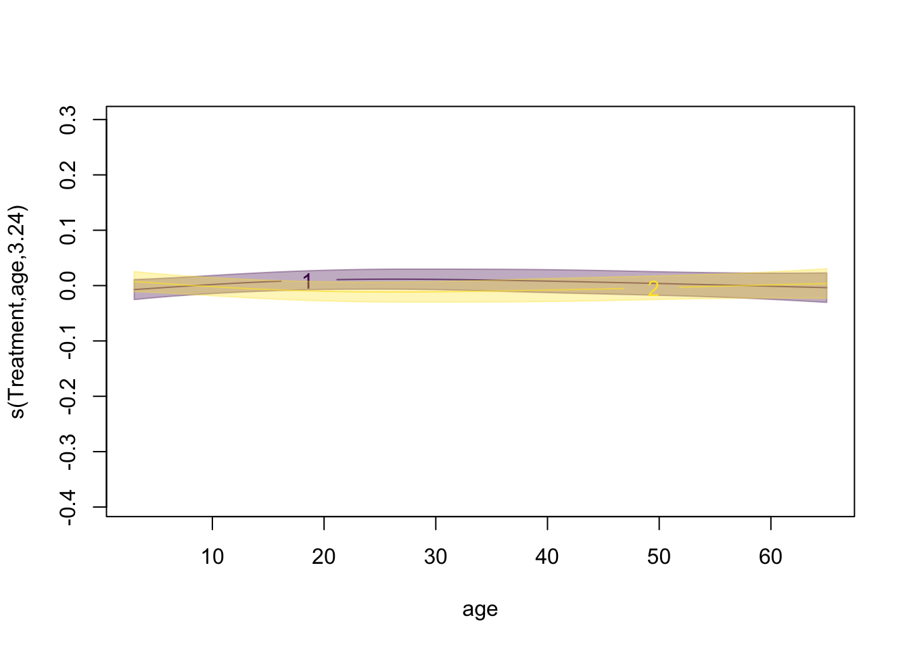
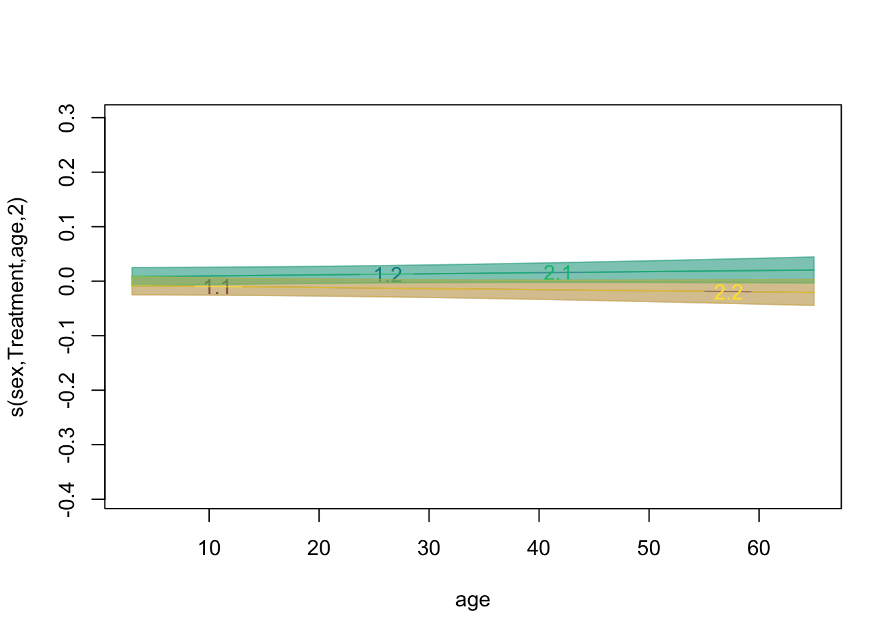
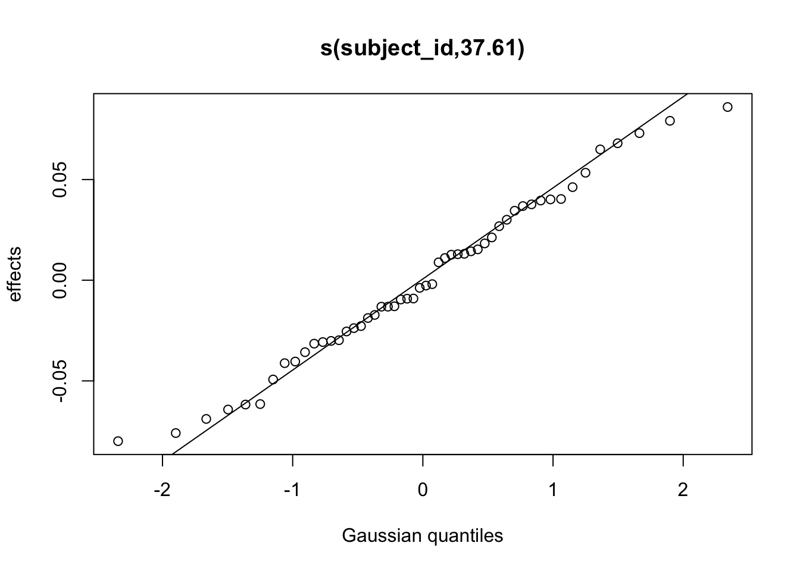
s6predict <- m1g(s6)
plotROI(gf, s6predict, brainstructs, "Bed nuclei of the stria terminalis")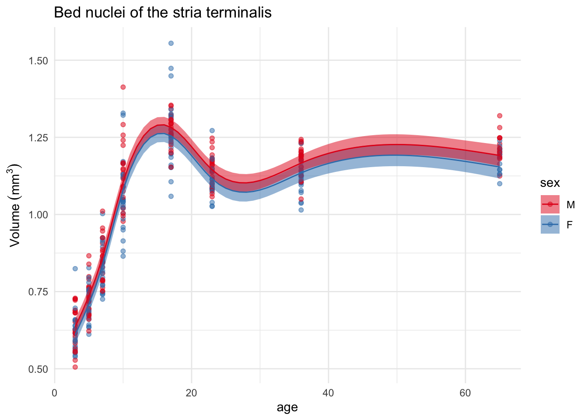
The plot with the most complex model still looks quite similar
s6predict %>% filter(age==35)# A tibble: 2 × 9
sex age estimate std.error df conf.low conf.high statistic p.value
<chr> <dbl> <dbl> <dbl> <dbl> <dbl> <dbl> <dbl> <dbl>
1 M 35 1.16 0.0133 275. 1.13 1.18 87.2 3.87e-202
2 F 35 1.12 0.0144 275. 1.10 1.15 78.1 1.56e-189s4Predict %>% filter(age==35)# A tibble: 2 × 9
sex age estimate std.error df conf.low conf.high statistic p.value
<chr> <dbl> <dbl> <dbl> <dbl> <dbl> <dbl> <dbl> <dbl>
1 M 35 1.16 0.0133 278. 1.13 1.18 86.9 1.71e-203
2 F 35 1.12 0.0140 278. 1.09 1.14 79.5 2.95e-193Comparing the output of the two models also shows pretty similar estimates of sex at (the randomly chosen) age of 35 days.
pairs(emmeans(s6, ~sex|age, at=list(age=35)))age = 35:
contrast estimate SE df t.ratio p.value
M - F 0.0316 0.0169 275 1.871 0.0624
Results are averaged over the levels of: Treatment pairs(emmeans(s4, ~sex|age, at=list(age=35)))age = 35:
contrast estimate SE df t.ratio p.value
M - F 0.0398 0.0165 278 2.406 0.0168
Results are averaged over the levels of: Treatment Allowing for separate treatment terms slightly dampens the age effect.
Let’s investigate what these models do using some artificial data. I’m going to simulate a simple dataset shaped vagued like the developmental one here (though treating it as cross-sectional for simplicity’s sake). First, what happens if there is only an offset but the slopes are constant?
x1 <- 0.1
x2 <- 0.005
set.seed(1234)
d1 <- data.frame(age=rep(unique(gf$age), 10)) %>%
mutate(volume = rnorm(80) + age*x1 + (age^2)*x2, group="g1") %>%
rbind (data.frame(age=rep(unique(gf$age), 10)) %>%
mutate(volume = rnorm(80, 0.5) + age*x1 + (age^2)*x2, group="g2")) %>%
mutate(group=factor(group))Here we have a normally distributed intercept, with the first group having a mean of 0 and the second a mean 0.5
ggplot(d1) + aes(x=age, y=volume, colour=group) +
geom_point() + geom_smooth(method="gam", formula=y~s(x, bs="cs", k=8)) +
theme_minimal()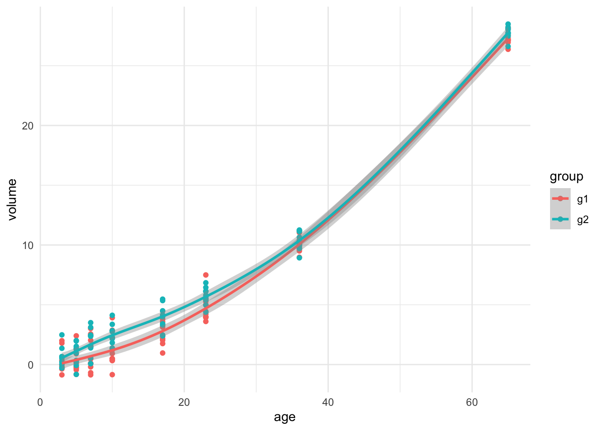
Let’s model it
tM <- gam(volume ~ s(age, bs="cs", k=8) + s(group, age, bs="sz", k=8), data=d1)
summary(tM)
Family: gaussian
Link function: identity
Formula:
volume ~ s(age, bs = "cs", k = 8) + s(group, age, bs = "sz",
k = 8)
Parametric coefficients:
Estimate Std. Error t value Pr(>|t|)
(Intercept) 6.30589 0.07488 84.21 <2e-16 ***
---
Signif. codes: 0 '***' 0.001 '**' 0.01 '*' 0.05 '.' 0.1 ' ' 1
Approximate significance of smooth terms:
edf Ref.df F p-value
s(age) 3.046 7 1867.38 < 2e-16 ***
s(group,age) 2.000 2 14.81 1.59e-06 ***
---
Signif. codes: 0 '***' 0.001 '**' 0.01 '*' 0.05 '.' 0.1 ' ' 1
R-sq.(adj) = 0.988 Deviance explained = 98.8%
GCV = 0.9324 Scale est. = 0.89717 n = 160So an edf of 2 that does come out as significant because of the offset.
emmeans(tM, ~group|age, at=list(age=c(3,65))) %>% pairsage = 3:
contrast estimate SE df t.ratio p.value
g1 - g2 -0.935 0.202 154 -4.631 <.0001
age = 65:
contrast estimate SE df t.ratio p.value
g1 - g2 -0.468 0.370 154 -1.268 0.2069Capturing that with a simpler model
tM2 <- gam(volume ~ group + s(age, bs="cs", k=8), data=d1)
summary(tM2)
Family: gaussian
Link function: identity
Formula:
volume ~ group + s(age, bs = "cs", k = 8)
Parametric coefficients:
Estimate Std. Error t value Pr(>|t|)
(Intercept) 5.9050 0.1059 55.772 < 2e-16 ***
groupg2 0.8017 0.1497 5.354 3.04e-07 ***
---
Signif. codes: 0 '***' 0.001 '**' 0.01 '*' 0.05 '.' 0.1 ' ' 1
Approximate significance of smooth terms:
edf Ref.df F p-value
s(age) 3.079 7 1869 <2e-16 ***
---
Signif. codes: 0 '***' 0.001 '**' 0.01 '*' 0.05 '.' 0.1 ' ' 1
R-sq.(adj) = 0.988 Deviance explained = 98.8%
GCV = 0.9262 Scale est. = 0.8968 n = 160emmeans(tM2, ~group|age, at=list(age=c(3,65))) %>% pairsage = 3:
contrast estimate SE df t.ratio p.value
g1 - g2 -0.802 0.15 155 -5.354 <.0001
age = 65:
contrast estimate SE df t.ratio p.value
g1 - g2 -0.802 0.15 155 -5.354 <.0001anova(tM2, tM, test="Chisq")Analysis of Deviance Table
Model 1: volume ~ group + s(age, bs = "cs", k = 8)
Model 2: volume ~ s(age, bs = "cs", k = 8) + s(group, age, bs = "sz",
k = 8)
Resid. Df Resid. Dev Df Deviance Pr(>Chi)
1 154.39 138.93
2 153.43 138.12 0.96311 0.80919 0.3297So the simpler model is clearly easier to interpret, and there’s no benefit in fitting the more complicated model. But the more complicated model does catch a difference in the sz fit even if there’s only variation in intercept.
Now let’s model a change in slope
x1 <- 0.1
x1.2 <- 0.075
x2 <- 0.005
set.seed(1234)
d1 <- data.frame(age=rep(unique(gf$age), 10)) %>%
mutate(volume = rnorm(80) + age*x1 + (age^2)*x2, group="g1") %>%
rbind (data.frame(age=rep(unique(gf$age), 10)) %>%
mutate(volume = rnorm(80) + age*x1.2 + (age^2)*x2, group="g2")) %>%
mutate(group=factor(group))
ggplot(d1) + aes(x=age, y=volume, colour=group) +
geom_point() + geom_smooth(method="gam", formula=y~s(x, bs="cs", k=8)) +
theme_minimal()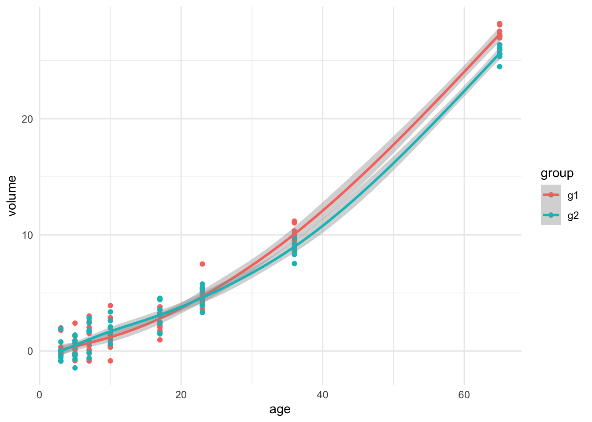
tM <- gam(volume ~ s(age, bs="cs", k=8) + s(group, age, bs="sz", k=8), data=d1)
summary(tM)
Family: gaussian
Link function: identity
Formula:
volume ~ s(age, bs = "cs", k = 8) + s(group, age, bs = "sz",
k = 8)
Parametric coefficients:
Estimate Std. Error t value Pr(>|t|)
(Intercept) 5.79651 0.07487 77.43 <2e-16 ***
---
Signif. codes: 0 '***' 0.001 '**' 0.01 '*' 0.05 '.' 0.1 ' ' 1
Approximate significance of smooth terms:
edf Ref.df F p-value
s(age) 3.112 7 1765.55 < 2e-16 ***
s(group,age) 2.000 2 10.13 7.38e-05 ***
---
Signif. codes: 0 '***' 0.001 '**' 0.01 '*' 0.05 '.' 0.1 ' ' 1
R-sq.(adj) = 0.987 Deviance explained = 98.8%
GCV = 0.93239 Scale est. = 0.89677 n = 160tM2 <- gam(volume ~ group + s(age, bs="cs", k=8), data=d1)
summary(tM2)
Family: gaussian
Link function: identity
Formula:
volume ~ group + s(age, bs = "cs", k = 8)
Parametric coefficients:
Estimate Std. Error t value Pr(>|t|)
(Intercept) 5.9050 0.1116 52.910 <2e-16 ***
groupg2 -0.2170 0.1578 -1.375 0.171
---
Signif. codes: 0 '***' 0.001 '**' 0.01 '*' 0.05 '.' 0.1 ' ' 1
Approximate significance of smooth terms:
edf Ref.df F p-value
s(age) 3.047 7 1588 <2e-16 ***
---
Signif. codes: 0 '***' 0.001 '**' 0.01 '*' 0.05 '.' 0.1 ' ' 1
R-sq.(adj) = 0.986 Deviance explained = 98.6%
GCV = 1.0289 Scale est. = 0.99645 n = 160emmeans(tM, ~group|age, at=list(age=c(3,65))) %>% pairsage = 3:
contrast estimate SE df t.ratio p.value
g1 - g2 -0.36 0.202 154 -1.785 0.0763
age = 65:
contrast estimate SE df t.ratio p.value
g1 - g2 1.66 0.370 154 4.483 <.0001emmeans(tM2, ~group|age, at=list(age=c(3,65))) %>% pairsage = 3:
contrast estimate SE df t.ratio p.value
g1 - g2 0.217 0.158 155 1.375 0.1711
age = 65:
contrast estimate SE df t.ratio p.value
g1 - g2 0.217 0.158 155 1.375 0.1711anova(tM2, tM, test="Chisq")Analysis of Deviance Table
Model 1: volume ~ group + s(age, bs = "cs", k = 8)
Model 2: volume ~ s(age, bs = "cs", k = 8) + s(group, age, bs = "sz",
k = 8)
Resid. Df Resid. Dev Df Deviance Pr(>Chi)
1 154.43 154.4
2 153.36 138.0 1.0714 16.4 2.205e-05 ***
---
Signif. codes: 0 '***' 0.001 '**' 0.01 '*' 0.05 '.' 0.1 ' ' 1In this case the more complex model clearly fits better, and finds significance where it should. The simpler model fails to distinguish the groups.
Let’s run it on all models. But first a small rewrite of our model to spit out which structure is being fit, as that will help identify where any fitting errors are occurring.
m4wprint <- function(y, verbose=TRUE) {
if (verbose) {
cat(y$name, "\n")
}
gf %>% mutate(y=y$volumes) %>%
gam(y ~ s(age, bs="cs", k=8) +
s(sex, age, bs="sz", k=8) +
s(Treatment, age, bs="sz", k=8) +
s(sex,Treatment, age, bs="sz", k=8) +
s(subject_id, bs="re"),
method="REML",
data=.)
}complexModel <- map(brainstructs, m4wprint)root2
Basic cell groups and regions
Cerebrum
Cerebral cortex Warning in newton(lsp = lsp, X = G$X, y = G$y, Eb = G$Eb, UrS = G$UrS, L =
G$L, : Fitting terminated with step failure - check results carefullyCortical subplate
Cortical subplate-other
left Cortical subplate-other
right Cortical subplate-other
Claustrum
Claustrum-other
left Claustrum-other
right Claustrum-other
Claustrum: dorsal part
left Claustrum: dorsal part
right Claustrum: dorsal part
Claustrum: ventral part
left Claustrum: ventral part
right Claustrum: ventral part
Endopiriform nucleus
Endopiriform nucleus, dorsal part
Dorsal nucleus of the endopiriform
left Dorsal nucleus of the endopiriform
right Dorsal nucleus of the endopiriform
Intermediate nucleus of the endopiriform claustrum
left Intermediate nucleus of the endopiriform claustrum
right Intermediate nucleus of the endopiriform claustrum
Endopiriform nucleus, ventral part
left Endopiriform nucleus, ventral part
right Endopiriform nucleus, ventral part
Cortical plate
Olfactory areas
Olfactory areas-other
left Olfactory areas-other
right Olfactory areas-other
Postpiriform transition area
left Postpiriform transition area
right Postpiriform transition area
Piriform area
Cortex-amygdala transition zones
left Cortex-amygdala transition zones
right Cortex-amygdala transition zones
Piriform cortex
left Piriform cortex
right Piriform cortex
Taenia tecta
Taenia tecta, dorsal part
left Taenia tecta, dorsal part
right Taenia tecta, dorsal part
Taenia tecta, ventral part
left Taenia tecta, ventral part
right Taenia tecta, ventral part
Cortical amygdalar area
Cortical amygdalar area, posterior part
Cortical amygdalar area, posterior part, lateral zone
left Cortical amygdalar area, posterior part, lateral zone
right Cortical amygdalar area, posterior part, lateral zone
Cortical amygdalar area, posterior part, medial zone
left Cortical amygdalar area, posterior part, medial zone
right Cortical amygdalar area, posterior part, medial zone
Piriform-amygdalar area
left Piriform-amygdalar area
right Piriform-amygdalar area
Main olfactory bulb
Main olfactory bulb, glomerular layer Warning in newton(lsp = lsp, X = G$X, y = G$y, Eb = G$Eb, UrS = G$UrS, L =
G$L, : Fitting terminated with step failure - check results carefullyleft Main olfactory bulb, glomerular layer
right Main olfactory bulb, glomerular layer
Main olfactory bulb, outer plexiform layer
left Main olfactory bulb, outer plexiform layer
right Main olfactory bulb, outer plexiform layer
Main olfactory bulb, mitral layer
left Main olfactory bulb, mitral layer
right Main olfactory bulb, mitral layer
Main olfactory bulb, inner plexiform layer
left Main olfactory bulb, inner plexiform layer
right Main olfactory bulb, inner plexiform layer
Main olfactory bulb, granule layer
left Main olfactory bulb, granule layer
right Main olfactory bulb, granule layer
Accessory olfactory bulb
Accessory olfactory bulb, glomerular layer
left Accessory olfactory bulb, glomerular layer
right Accessory olfactory bulb, glomerular layer
Accessory olfactory bulb, granular layer
left Accessory olfactory bulb, granular layer
right Accessory olfactory bulb, granular layer
Anterior olfactory nucleus
left Anterior olfactory nucleus
right Anterior olfactory nucleus
Hippocampal formation
Retrohippocampal region
Subiculum
pre-para subiculum
left pre-para subiculum
right pre-para subiculum
subiculum
left subiculum
right subiculum
Entorhinal area
Entorhinal area, medial part, dorsal zone
left Entorhinal area, medial part, dorsal zone
right Entorhinal area, medial part, dorsal zone
Entorhinal area, lateral part
Dorsal intermediate entorhinal cortex
left Dorsal intermediate entorhinal cortex
right Dorsal intermediate entorhinal cortex
Dorsolateral entorhinal cortex
left Dorsolateral entorhinal cortex
right Dorsolateral entorhinal cortex
Ventral intermediate entorhinal cortex
left Ventral intermediate entorhinal cortex
right Ventral intermediate entorhinal cortex
Entorhinal area, medial part, ventral zone
left Entorhinal area, medial part, ventral zone
right Entorhinal area, medial part, ventral zone
Hippocampal region
Ammon's horn
Field CA1
Field CA1, stratum oriens
left Field CA1, stratum oriens
right Field CA1, stratum oriens
Field CA1, stratum lacunosum-moleculare
left Field CA1, stratum lacunosum-moleculare
right Field CA1, stratum lacunosum-moleculare
Field CA1, stratum radiatum Warning in newton(lsp = lsp, X = G$X, y = G$y, Eb = G$Eb, UrS = G$UrS, L =
G$L, : Fitting terminated with step failure - check results carefullyleft Field CA1, stratum radiatum
right Field CA1, stratum radiatum
Field CA1, pyramidal layer
left Field CA1, pyramidal layer
right Field CA1, pyramidal layer
Field CA2
Field CA2, pyramidal layer
left Field CA2, pyramidal layer
right Field CA2, pyramidal layer
Field CA2, stratum oriens
left Field CA2, stratum oriens
right Field CA2, stratum oriens
Field CA2, stratum radiatum
left Field CA2, stratum radiatum
right Field CA2, stratum radiatum
Field CA3
Field CA3, pyramidal layer
CA3Py Inner
left CA3Py Inner
right CA3Py Inner Warning in newton(lsp = lsp, X = G$X, y = G$y, Eb = G$Eb, UrS = G$UrS, L =
G$L, : Fitting terminated with step failure - check results carefullyCA3Py Outer
left CA3Py Outer
right CA3Py Outer
Field CA3, stratum oriens
left Field CA3, stratum oriens
right Field CA3, stratum oriens
Field CA3, stratum radiatum
left Field CA3, stratum radiatum
right Field CA3, stratum radiatum
Field CA3, stratum lucidum
left Field CA3, stratum lucidum
right Field CA3, stratum lucidum
Dentate gyrus
Dentate gyrus, molecular layer
left Dentate gyrus, molecular layer
right Dentate gyrus, molecular layer
Dentate gyrus, granule cell layer
GrDG
left GrDG
right GrDG
PoDG
left PoDG
right PoDG
Isocortex
Anterior cingulate area
Anterior cingulate area, ventral part
Cingulate cortex: area 24a
left Cingulate cortex: area 24a
right Cingulate cortex: area 24a
Cingulate cortex: area 24a'
left Cingulate cortex: area 24a'
right Cingulate cortex: area 24a'
Anterior cingulate area, dorsal part
Cingulate cortex: area 24b
left Cingulate cortex: area 24b Warning in newton(lsp = lsp, X = G$X, y = G$y, Eb = G$Eb, UrS = G$UrS, L =
G$L, : Fitting terminated with step failure - check results carefullyright Cingulate cortex: area 24b
Cingulate cortex: area 24b'
left Cingulate cortex: area 24b'
right Cingulate cortex: area 24b'
Infralimbic area
left Infralimbic area
right Infralimbic area
Retrosplenial area
Retrosplenial area, ventral part
Cingulate cortex: area 29a
left Cingulate cortex: area 29a
right Cingulate cortex: area 29a
Cingulate cortex: area 29b
left Cingulate cortex: area 29b
right Cingulate cortex: area 29b
Cingulate cortex: area 29c
left Cingulate cortex: area 29c
right Cingulate cortex: area 29c
Retrosplenial area, dorsal part
left Retrosplenial area, dorsal part
right Retrosplenial area, dorsal part
Prelimbic area
left Prelimbic area
right Prelimbic area
Auditory areas
Primary auditory area
left Primary auditory area
right Primary auditory area
Dorsal auditory area
left Dorsal auditory area
right Dorsal auditory area
Ventral auditory area
left Ventral auditory area
right Ventral auditory area
Agranular insular area
Agranular insular area, dorsal part
left Agranular insular area, dorsal part
right Agranular insular area, dorsal part
Ectorhinal area
Ectorhinal cortex
left Ectorhinal cortex
right Ectorhinal cortex
Insular region: not subdivided
left Insular region: not subdivided Warning in newton(lsp = lsp, X = G$X, y = G$y, Eb = G$Eb, UrS = G$UrS, L =
G$L, : Fitting terminated with step failure - check results carefullyright Insular region: not subdivided
Somatomotor areas
Primary motor area
Frontal cortex: area 3
left Frontal cortex: area 3
right Frontal cortex: area 3
Primary motor cortex
left Primary motor cortex
right Primary motor cortex
Secondary motor area
left Secondary motor area
right Secondary motor area
Frontal pole, cerebral cortex
left Frontal pole, cerebral cortex
right Frontal pole, cerebral cortex
Orbital area
Orbital area, lateral part Warning in newton(lsp = lsp, X = G$X, y = G$y, Eb = G$Eb, UrS = G$UrS, L =
G$L, : Fitting terminated with step failure - check results carefullyleft Orbital area, lateral part
right Orbital area, lateral part
Orbital area, medial part
left Orbital area, medial part
right Orbital area, medial part
Orbital area, ventrolateral part
left Orbital area, ventrolateral part
right Orbital area, ventrolateral part
Posterior parietal association areas
Lateral parietal association cortex
left Lateral parietal association cortex
right Lateral parietal association cortex
Medial parietal association cortex
left Medial parietal association cortex
right Medial parietal association cortex
Parietal cortex: posterior area: rostral part
left Parietal cortex: posterior area: rostral part
right Parietal cortex: posterior area: rostral part
Secondary visual cortex: mediomedial area
left Secondary visual cortex: mediomedial area
right Secondary visual cortex: mediomedial area
Perirhinal area
left Perirhinal area
right Perirhinal area
Somatosensory areas
Primary somatosensory area
Primary somatosensory area-other
left Primary somatosensory area-other
right Primary somatosensory area-other
Primary somatosensory area, barrel field
left Primary somatosensory area, barrel field
right Primary somatosensory area, barrel field
Primary somatosensory area, trunk
Primary somatosensory cortex: dysgranular zone
left Primary somatosensory cortex: dysgranular zone
right Primary somatosensory cortex: dysgranular zone
Primary somatosensory cortex: shoulder region
left Primary somatosensory cortex: shoulder region
right Primary somatosensory cortex: shoulder region
Primary somatosensory cortex: trunk region
left Primary somatosensory cortex: trunk region
right Primary somatosensory cortex: trunk region
Primary somatosensory area, upper limb
left Primary somatosensory area, upper limb
right Primary somatosensory area, upper limb Warning in newton(lsp = lsp, X = G$X, y = G$y, Eb = G$Eb, UrS = G$UrS, L =
G$L, : Fitting terminated with step failure - check results carefullyPrimary somatosensory area, lower limb
left Primary somatosensory area, lower limb
right Primary somatosensory area, lower limb
Primary somatosensory area, mouth
left Primary somatosensory area, mouth
right Primary somatosensory area, mouth
Primary somatosensory area, nose
left Primary somatosensory area, nose
right Primary somatosensory area, nose
Supplemental somatosensory area
left Supplemental somatosensory area
right Supplemental somatosensory area
Temporal association areas
left Temporal association areas
right Temporal association areas
Visual areas
Primary visual area
left Primary visual area
right Primary visual area
Lateral visual area
left Lateral visual area
right Lateral visual area
posteromedial visual area
left posteromedial visual area
right posteromedial visual area
Anterolateral visual area
left Anterolateral visual area
right Anterolateral visual area
Anteromedial visual area
left Anteromedial visual area
right Anteromedial visual area
Cerebral nuclei
Pallidum
Pallidum, ventral region
left Pallidum, ventral region
right Pallidum, ventral region
Pallidum, caudal region
Bed nuclei of the stria terminalis
left Bed nuclei of the stria terminalis
right Bed nuclei of the stria terminalis
Pallidum, dorsal region
left Pallidum, dorsal region
right Pallidum, dorsal region
Pallidum, medial region
Medial septal complex
left Medial septal complex
right Medial septal complex
Striatum
Striatum ventral region
Fundus of striatum
left Fundus of striatum
right Fundus of striatum
Nucleus accumbens
left Nucleus accumbens
right Nucleus accumbens
Olfactory tubercle
left Olfactory tubercle
right Olfactory tubercle
Lateral septal complex
left Lateral septal complex
right Lateral septal complex
Striatum dorsal region
Caudoputamen
left Caudoputamen
right Caudoputamen
Striatum-like amygdalar nuclei
Medial amygdalar nucleus
left Medial amygdalar nucleus
right Medial amygdalar nucleus
Brain stem
Midbrain
Midbrain, sensory related
Inferior colliculus
left Inferior colliculus
right Inferior colliculus
Superior colliculus, sensory related
left Superior colliculus, sensory related
right Superior colliculus, sensory related
Midbrain, behavioral state related
Midbrain raphe nuclei
Interpeduncular nucleus
Midbrain-other
Midbrain, motor related
Periaqueductal gray
Hindbrain
Medulla
Medulla, sensory related
Dorsal column nuclei
Cuneate nucleus
left Cuneate nucleus
right Cuneate nucleus
Medulla, motor related
Inferior olivary complex
left Inferior olivary complex
right Inferior olivary complex
Medulla-other
Pons
Pons-other
Pons, behavioral state related
Pontine reticular nucleus
left Pontine reticular nucleus
right Pontine reticular nucleus
Pons, sensory related
Superior olivary complex
left Superior olivary complex
right Superior olivary complex
Interbrain
Hypothalamus
Hypothalamus-other Warning in newton(lsp = lsp, X = G$X, y = G$y, Eb = G$Eb, UrS = G$UrS, L =
G$L, : Fitting terminated with step failure - check results carefullyleft Hypothalamus-other
right Hypothalamus-other
Hypothalamic medial zone
Mammillary body
left Mammillary body
right Mammillary body
Medial preoptic nucleus
left Medial preoptic nucleus
right Medial preoptic nucleus
Thalamus
left Thalamus
right Thalamus
Cerebellum
Cerebellar cortex
Vermal regions
Lingula (I)
Central lobule
Culmen
Culmen-other
Lobules IV-V
left Lobules IV-V
right Lobules IV-V
Declive (VI)
Folium-tuber vermis (VII)
Pyramus (VIII)
Uvula (IX)
Nodulus (X)
Hemispheric regions
Simple lobule
left Simple lobule
right Simple lobule
Ansiform lobule
Crus 1
left Crus 1
right Crus 1
Crus 2
left Crus 2
right Crus 2
Paramedian lobule Warning in newton(lsp = lsp, X = G$X, y = G$y, Eb = G$Eb, UrS = G$UrS, L =
G$L, : Fitting terminated with step failure - check results carefullyleft Paramedian lobule
right Paramedian lobule
Copula pyramidis
left Copula pyramidis
right Copula pyramidis
Flocculus
left Flocculus
right Flocculus
Paraflocculus
left Paraflocculus
right Paraflocculus
Cerebellar nuclei
Dentate nucleus
left Dentate nucleus
right Dentate nucleus
Interposed nucleus
left Interposed nucleus
right Interposed nucleus
Fastigial nucleus
left Fastigial nucleus
right Fastigial nucleus
fiber tracts
cranial nerves
olfactory nerve
anterior commissure, olfactory limb
left anterior commissure, olfactory limb
right anterior commissure, olfactory limb
lateral olfactory tract, general
left lateral olfactory tract, general
right lateral olfactory tract, general
facial nerve
left facial nerve
right facial nerve
dorsal roots
cervicothalamic tract
medial lemniscus
left medial lemniscus
right medial lemniscus
optic nerve
optic tract
left optic tract
right optic tract
oculomotor nerve
posterior commissure
medial forebrain bundle system
cerebrum related
anterior commissure, temporal limb
left anterior commissure, temporal limb
right anterior commissure, temporal limb
fornix system
fimbria
left fimbria
right fimbria
dorsal fornix
left dorsal fornix
right dorsal fornix
stria terminalis
left stria terminalis
right stria terminalis
cingulum bundle
left cingulum bundle
right cingulum bundle
hypothalamus related
epithalamus related
fasciculus retroflexus
left fasciculus retroflexus
right fasciculus retroflexus
habenular commissure
left habenular commissure
right habenular commissure
stria medullaris
left stria medullaris
right stria medullaris
mammillary related
mammilothalmic tract
left mammilothalmic tract
right mammilothalmic tract
cerebellum related fiber tracts
cerebellar peduncles
inferior cerebellar peduncle
left inferior cerebellar peduncle
right inferior cerebellar peduncle
middle cerebellar peduncle
left middle cerebellar peduncle
right middle cerebellar peduncle
superior cerebelar peduncles
left superior cerebelar peduncles
right superior cerebelar peduncles
arbor vitae
trunk of arbor vita
lobule 1-2 white matter
lobule 3 white matter
trunk of lobules 1-3 white matter
lobules 4-5 white matter
lobules 6-7 white matter
lobule 8 white matter
trunk of lobules 6-8 white matter
lobule 9 white matter
lobule 10 white matter
anterior lobule white matter
left anterior lobule white matter
right anterior lobule white matter
simple lobule white matter
left simple lobule white matter
right simple lobule white matter
crus 1 white matter
left crus 1 white matter
right crus 1 white matter
trunk of simple and crus 1 white matter
left trunk of simple and crus 1 white matter
right trunk of simple and crus 1 white matter
crus 2 white matter
left crus 2 white matter
right crus 2 white matter Warning in newton(lsp = lsp, X = G$X, y = G$y, Eb = G$Eb, UrS = G$UrS, L =
G$L, : Fitting terminated with step failure - check results carefullyparamedian lobule
left paramedian lobule
right paramedian lobule
trunk of crus 2 and paramedian white matter
left trunk of crus 2 and paramedian white matter
right trunk of crus 2 and paramedian white matter
copula white matter
left copula white matter
right copula white matter
paraflocculus white matter
left paraflocculus white matter
right paraflocculus white matter
flocculus white matter
left flocculus white matter
right flocculus white matter
lateral forebrain bundle system
corticospinal tract
cerebal peduncle
left cerebal peduncle
right cerebal peduncle
corticospinal tract-other
left corticospinal tract-other
right corticospinal tract-other
internal capsule
left internal capsule
right internal capsule
corpus callosum
left corpus callosum
right corpus callosum
extrapyramidal fiber systems
rubrospinal tract
ventral tegmental decussation
ventricular systems
cerebral aqueduct
fourth ventricle
lateral ventricle
lateral ventricle-other
left lateral ventricle-other
right lateral ventricle-other
subependymal zone
left subependymal zone
right subependymal zone
third ventricle There are a few areas that warn with the following message: “Fitting terminated with step failure - check results carefully”. Let’s look at a few of them:
plotROI(gf, m1g(complexModel[["Taenia tecta"]]), brainstructs, "Taenia tecta")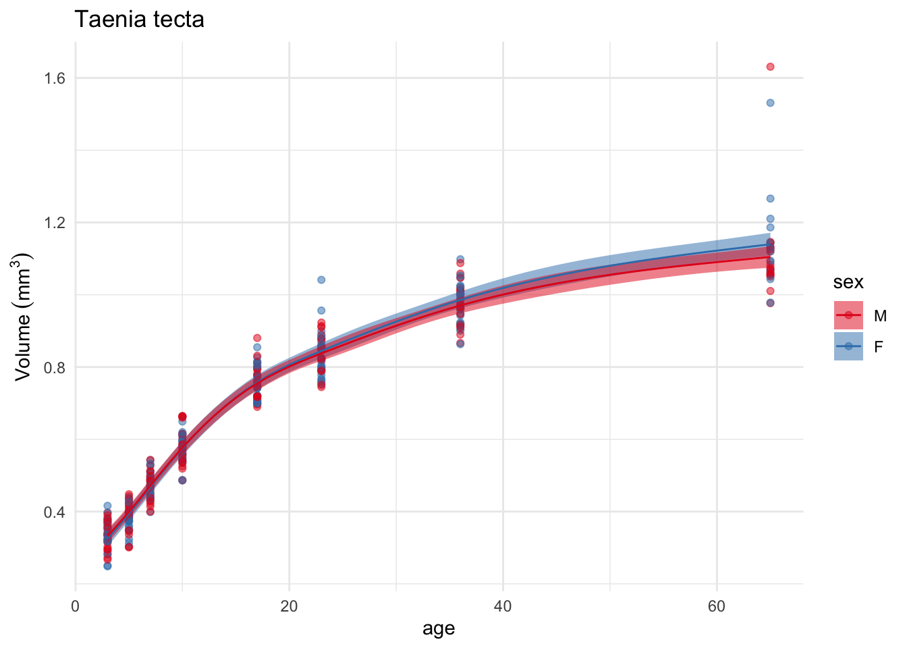
plotROI(gf, m1g(complexModel[["right crus 2 white matter"]]), brainstructs, "right crus 2 white matter")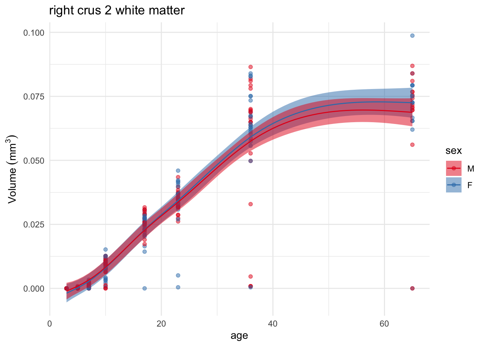
Visually the fit looks good in both cases. And in both cases we can see outliers that are likely the result of poor segmentations.
summary(complexModel[["Taenia tecta"]])
Family: gaussian
Link function: identity
Formula:
y ~ s(age, bs = "cs", k = 8) + s(sex, age, bs = "sz", k = 8) +
s(Treatment, age, bs = "sz", k = 8) + s(sex, Treatment, age,
bs = "sz", k = 8) + s(subject_id, bs = "re")
Parametric coefficients:
Estimate Std. Error t value Pr(>|t|)
(Intercept) 0.667016 0.005469 122 <2e-16 ***
---
Signif. codes: 0 '***' 0.001 '**' 0.01 '*' 0.05 '.' 0.1 ' ' 1
Approximate significance of smooth terms:
edf Ref.df F p-value
s(age) 5.037 7.000 1081.674 <2e-16 ***
s(sex,age) 2.000 2.000 1.733 0.1785
s(Treatment,age) 2.965 3.365 1.197 0.3314
s(sex,Treatment,age) 2.000 2.000 2.534 0.0811 .
s(subject_id) 30.008 48.000 1.858 <2e-16 ***
---
Signif. codes: 0 '***' 0.001 '**' 0.01 '*' 0.05 '.' 0.1 ' ' 1
R-sq.(adj) = 0.959 Deviance explained = 96.4%
-REML = -421.68 Scale est. = 0.0029228 n = 327summary(complexModel[["right crus 2 white matter"]])
Family: gaussian
Link function: identity
Formula:
y ~ s(age, bs = "cs", k = 8) + s(sex, age, bs = "sz", k = 8) +
s(Treatment, age, bs = "sz", k = 8) + s(sex, Treatment, age,
bs = "sz", k = 8) + s(subject_id, bs = "re")
Parametric coefficients:
Estimate Std. Error t value Pr(>|t|)
(Intercept) 0.0227090 0.0007863 28.88 <2e-16 ***
---
Signif. codes: 0 '***' 0.001 '**' 0.01 '*' 0.05 '.' 0.1 ' ' 1
Approximate significance of smooth terms:
edf Ref.df F p-value
s(age) 4.129 7.000 230.029 <2e-16 ***
s(sex,age) 2.001 2.001 0.545 0.5806
s(Treatment,age) 3.387 3.841 3.075 0.0264 *
s(sex,Treatment,age) 2.661 3.015 0.499 0.6885
s(subject_id) 16.584 48.000 0.554 0.0125 *
---
Signif. codes: 0 '***' 0.001 '**' 0.01 '*' 0.05 '.' 0.1 ' ' 1
R-sq.(adj) = 0.844 Deviance explained = 85.7%
-REML = -957.03 Scale est. = 0.00011433 n = 327In both cases the model terms looks reasonable too. So I think for now we can keep these models even with that warning. It might be worth including an outlier rejection step ahead of the fitting though. Leave that for the future.
Let’s fit a simpler model too - allowing separate treatment and sex terms, but not treatment by sex interaction
m5 <- function(y) {
gf %>% mutate(y=y$volumes) %>%
gam(y ~ s(age, bs="cs", k=8) +
s(sex, age, bs="sz", k=8) +
s(Treatment, age, bs="sz", k=8) +
s(subject_id, bs="re"),
method="REML",
data=.)
}And let’s fit the simplest model (m2 - Treatment as an offset) and m5
m2Models <- map(brainstructs, m2)Warning in newton(lsp = lsp, X = G$X, y = G$y, Eb = G$Eb, UrS = G$UrS, L =
G$L, : Fitting terminated with step failure - check results carefully
Warning in newton(lsp = lsp, X = G$X, y = G$y, Eb = G$Eb, UrS = G$UrS, L =
G$L, : Fitting terminated with step failure - check results carefully
Warning in newton(lsp = lsp, X = G$X, y = G$y, Eb = G$Eb, UrS = G$UrS, L =
G$L, : Fitting terminated with step failure - check results carefully
Warning in newton(lsp = lsp, X = G$X, y = G$y, Eb = G$Eb, UrS = G$UrS, L =
G$L, : Fitting terminated with step failure - check results carefully
Warning in newton(lsp = lsp, X = G$X, y = G$y, Eb = G$Eb, UrS = G$UrS, L =
G$L, : Fitting terminated with step failure - check results carefully
Warning in newton(lsp = lsp, X = G$X, y = G$y, Eb = G$Eb, UrS = G$UrS, L =
G$L, : Fitting terminated with step failure - check results carefully
Warning in newton(lsp = lsp, X = G$X, y = G$y, Eb = G$Eb, UrS = G$UrS, L =
G$L, : Fitting terminated with step failure - check results carefully
Warning in newton(lsp = lsp, X = G$X, y = G$y, Eb = G$Eb, UrS = G$UrS, L =
G$L, : Fitting terminated with step failure - check results carefully
Warning in newton(lsp = lsp, X = G$X, y = G$y, Eb = G$Eb, UrS = G$UrS, L =
G$L, : Fitting terminated with step failure - check results carefully
Warning in newton(lsp = lsp, X = G$X, y = G$y, Eb = G$Eb, UrS = G$UrS, L =
G$L, : Fitting terminated with step failure - check results carefullym5Models <- map(brainstructs, m5)Warning in newton(lsp = lsp, X = G$X, y = G$y, Eb = G$Eb, UrS = G$UrS, L =
G$L, : Fitting terminated with step failure - check results carefully
Warning in newton(lsp = lsp, X = G$X, y = G$y, Eb = G$Eb, UrS = G$UrS, L =
G$L, : Fitting terminated with step failure - check results carefully
Warning in newton(lsp = lsp, X = G$X, y = G$y, Eb = G$Eb, UrS = G$UrS, L =
G$L, : Fitting terminated with step failure - check results carefully
Warning in newton(lsp = lsp, X = G$X, y = G$y, Eb = G$Eb, UrS = G$UrS, L =
G$L, : Fitting terminated with step failure - check results carefully
Warning in newton(lsp = lsp, X = G$X, y = G$y, Eb = G$Eb, UrS = G$UrS, L =
G$L, : Fitting terminated with step failure - check results carefully
Warning in newton(lsp = lsp, X = G$X, y = G$y, Eb = G$Eb, UrS = G$UrS, L =
G$L, : Fitting terminated with step failure - check results carefully
Warning in newton(lsp = lsp, X = G$X, y = G$y, Eb = G$Eb, UrS = G$UrS, L =
G$L, : Fitting terminated with step failure - check results carefully
Warning in newton(lsp = lsp, X = G$X, y = G$y, Eb = G$Eb, UrS = G$UrS, L =
G$L, : Fitting terminated with step failure - check results carefully
Warning in newton(lsp = lsp, X = G$X, y = G$y, Eb = G$Eb, UrS = G$UrS, L =
G$L, : Fitting terminated with step failure - check results carefully
Warning in newton(lsp = lsp, X = G$X, y = G$y, Eb = G$Eb, UrS = G$UrS, L =
G$L, : Fitting terminated with step failure - check results carefully
Warning in newton(lsp = lsp, X = G$X, y = G$y, Eb = G$Eb, UrS = G$UrS, L =
G$L, : Fitting terminated with step failure - check results carefully
Warning in newton(lsp = lsp, X = G$X, y = G$y, Eb = G$Eb, UrS = G$UrS, L =
G$L, : Fitting terminated with step failure - check results carefully
Warning in newton(lsp = lsp, X = G$X, y = G$y, Eb = G$Eb, UrS = G$UrS, L =
G$L, : Fitting terminated with step failure - check results carefully
Warning in newton(lsp = lsp, X = G$X, y = G$y, Eb = G$Eb, UrS = G$UrS, L =
G$L, : Fitting terminated with step failure - check results carefully
Warning in newton(lsp = lsp, X = G$X, y = G$y, Eb = G$Eb, UrS = G$UrS, L =
G$L, : Fitting terminated with step failure - check results carefully
Warning in newton(lsp = lsp, X = G$X, y = G$y, Eb = G$Eb, UrS = G$UrS, L =
G$L, : Fitting terminated with step failure - check results carefully
Warning in newton(lsp = lsp, X = G$X, y = G$y, Eb = G$Eb, UrS = G$UrS, L =
G$L, : Fitting terminated with step failure - check results carefully
Warning in newton(lsp = lsp, X = G$X, y = G$y, Eb = G$Eb, UrS = G$UrS, L =
G$L, : Fitting terminated with step failure - check results carefully
Warning in newton(lsp = lsp, X = G$X, y = G$y, Eb = G$Eb, UrS = G$UrS, L =
G$L, : Fitting terminated with step failure - check results carefully
Warning in newton(lsp = lsp, X = G$X, y = G$y, Eb = G$Eb, UrS = G$UrS, L =
G$L, : Fitting terminated with step failure - check results carefully
Warning in newton(lsp = lsp, X = G$X, y = G$y, Eb = G$Eb, UrS = G$UrS, L =
G$L, : Fitting terminated with step failure - check results carefully
Warning in newton(lsp = lsp, X = G$X, y = G$y, Eb = G$Eb, UrS = G$UrS, L =
G$L, : Fitting terminated with step failure - check results carefully
Warning in newton(lsp = lsp, X = G$X, y = G$y, Eb = G$Eb, UrS = G$UrS, L =
G$L, : Fitting terminated with step failure - check results carefully
Warning in newton(lsp = lsp, X = G$X, y = G$y, Eb = G$Eb, UrS = G$UrS, L =
G$L, : Fitting terminated with step failure - check results carefully
Warning in newton(lsp = lsp, X = G$X, y = G$y, Eb = G$Eb, UrS = G$UrS, L =
G$L, : Fitting terminated with step failure - check results carefullymodelComp <- pmap(list(m2Models, m5Models, complexModel), function(a,b,c) anova(a,b,c,test="Chisq"))m4g <- function(g1) {
emmeans(g1, ~ Treatment + sex|age, at=list(age=seq(3,65,1))) %>% tidy(conf.int=T)
}
m4gp <- function(g1) {
emmeans(g1, ~ Treatment + sex|age, at=list(age=seq(3,65,1))) %>% pairs(adjust="none") %>% tidy(conf.int=T)
}plotROI3 <- function(df, fittedModel, brainstructs, roiName, title=NULL, subtitle=NULL) {
df %>%
mutate(y=brainstructs[[roiName]]$volumes) %>%
ggplot() +
aes(x=age, y=y, colour=Treatment, fill=Treatment) +
geom_point(alpha=0.5) +
geom_ribbon(data=fittedModel,
aes(y=estimate, ymin=conf.low, ymax=conf.high),
colour=NA, alpha=0.5) +
geom_line(data=fittedModel, aes(y=estimate)) +
ylab(bquote(Volume ~ (mm^3))) +
ggtitle(ifelse(is.null(title), roiName, title),
subtitle = subtitle) +
scale_color_brewer(palette = "Set1") +
scale_fill_brewer(palette = "Set1") +
facet_grid(.~sex) +
theme_minimal()
}plotROI3(gf, m4g(complexModel[["corpus callosum"]]), brainstructs, "corpus callosum")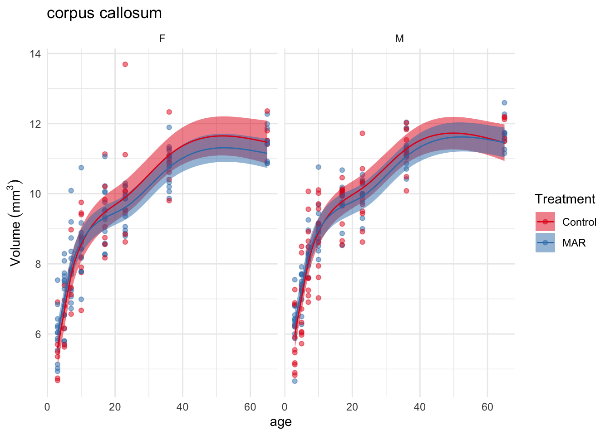